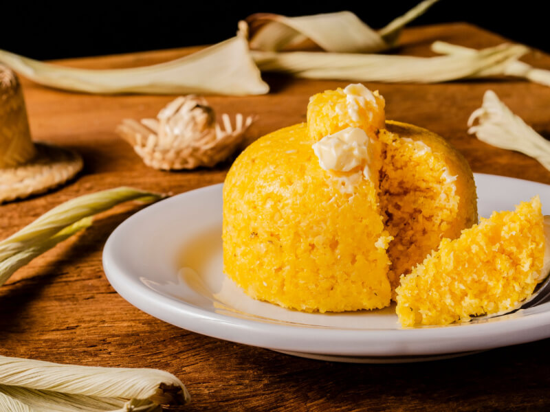
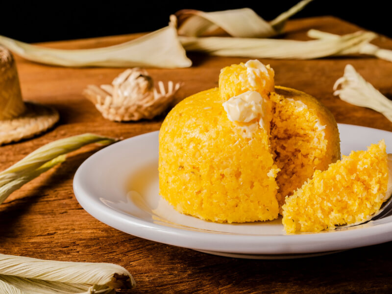

| Prato |
Descrição |
Valor |
| Carne de Sol com Nata |
Tradicional carne de sol servida com nata cremosa |
45,00 |
| Baião de Dois |
Arroz com feijão verde, queijo coalho e carne seca |
35,00 |
| Tapioca Recheada |
Tapioca com diversos recheios a escolher |
20,00 |
| Buchada de Bode |
Prato típico feito com vísceras de bode |
50,00 |
| Rubacão |
Feijão verde com arroz, carne de sol e temperos |
30,00 |
| Cuscuz Paraibano |
Milho flocão cozido com carne seca e manteiga da terra |
25,00 |
| Caldo de Mocotó |
Caldo feito com mocotó bovino, bem temperado |
18,00 |
| Queijo Coalho Grelhado |
Queijo coalho grelhado com melaço |
15,00 |
| Cartola |
Sobremesa de banana frita com queijo e canela |
12,00 |
| Pudim de Tapioca |
Pudim cremoso feito de tapioca |
10,00 |
 
